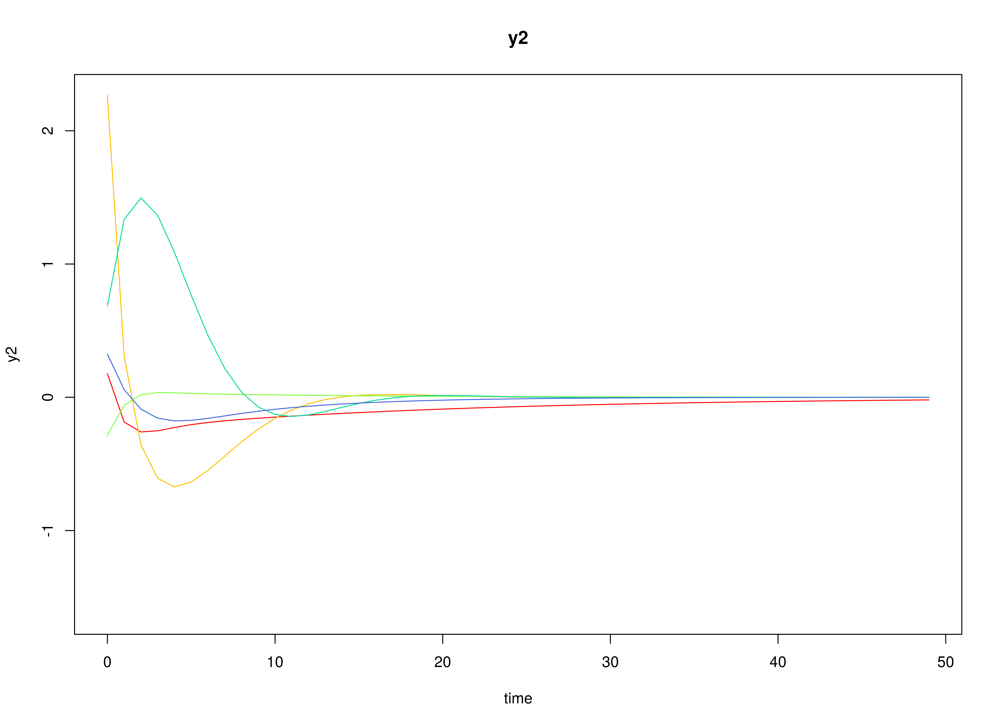
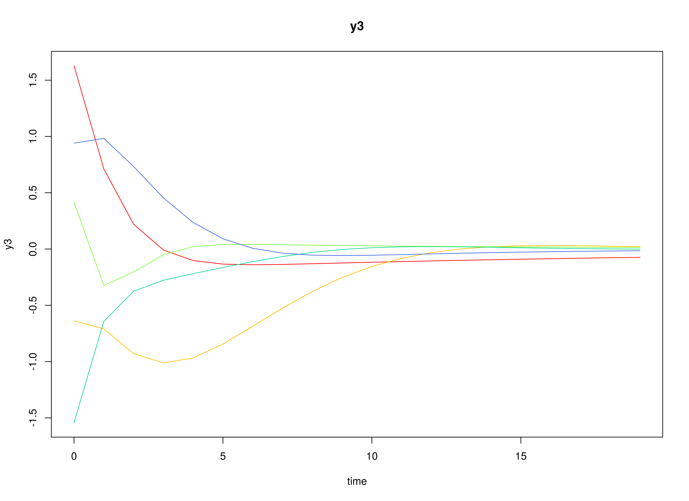
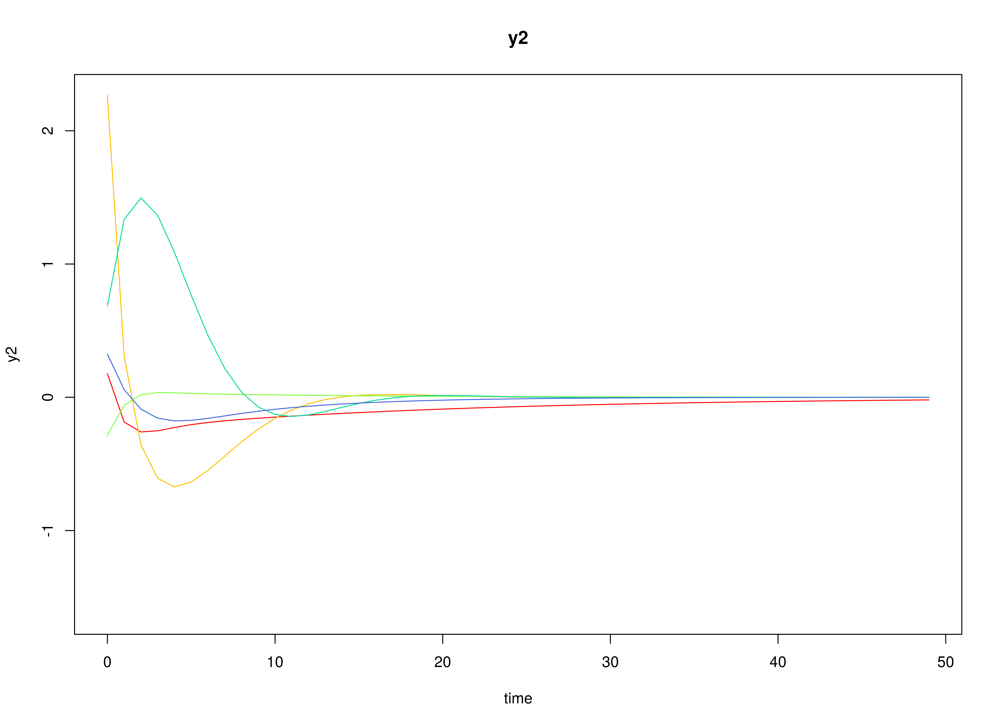
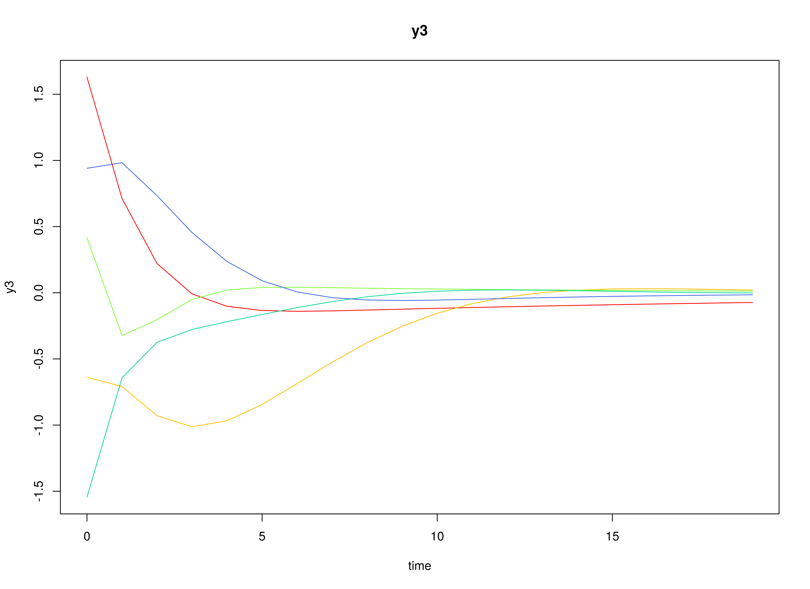

Fit The Discrete-Time Vector Autoregressive Model By ID
Ivan Jacob Agaloos Pesigan
2024-07-05
Source:vignettes/fit-dt-var-id.Rmd
fit-dt-var-id.RmdModel
The measurement model is given by \[\begin{equation} \mathbf{y}_{i, t} = \boldsymbol{\eta}_{i, t} \end{equation}\] where \(\mathbf{y}_{i, t}\) represents a vector of observed variables and \(\boldsymbol{\eta}_{i, t}\) a vector of latent variables for individual \(i\) and time \(t\). Since the observed and latent variables are equal, we only generate data from the dynamic structure.
The dynamic structure is given by \[\begin{equation} \boldsymbol{\eta}_{i, t} = \boldsymbol{\alpha} + \boldsymbol{\beta} \boldsymbol{\eta}_{i, t - 1} + \boldsymbol{\zeta}_{i, t}, \quad \mathrm{with} \quad \boldsymbol{\zeta}_{i, t} \sim \mathcal{N} \left( \mathbf{0}, \boldsymbol{\Psi} \right) \end{equation}\] where \(\boldsymbol{\eta}_{i, t}\), \(\boldsymbol{\eta}_{i, t - 1}\), and \(\boldsymbol{\zeta}_{i, t}\) are random variables, and \(\boldsymbol{\alpha}\), \(\boldsymbol{\beta}\), and \(\boldsymbol{\Psi}\) are model parameters. Here, \(\boldsymbol{\eta}_{i, t}\) is a vector of latent variables at time \(t\) and individual \(i\), \(\boldsymbol{\eta}_{i, t - 1}\) represents a vector of latent variables at time \(t - 1\) and individual \(i\), and \(\boldsymbol{\zeta}_{i, t}\) represents a vector of dynamic noise at time \(t\) and individual \(i\). \(\boldsymbol{\alpha}\) denotes a vector of intercepts, \(\boldsymbol{\beta}\) a matrix of autoregression and cross regression coefficients, and \(\boldsymbol{\Psi}\) the covariance matrix of \(\boldsymbol{\zeta}_{i, t}\).
An alternative representation of the dynamic noise is given by \[\begin{equation} \boldsymbol{\zeta}_{i, t} = \boldsymbol{\Psi}^{\frac{1}{2}} \mathbf{z}_{i, t}, \quad \mathrm{with} \quad \mathbf{z}_{i, t} \sim \mathcal{N} \left( \mathbf{0}, \mathbf{I} \right) \end{equation}\] where \(\left( \boldsymbol{\Psi}^{\frac{1}{2}} \right) \left( \boldsymbol{\Psi}^{\frac{1}{2}} \right)^{\prime} = \boldsymbol{\Psi}\) .
Data Generation
Notation
Let \(t = 1000\) be the number of time points and \(n = 100\) be the number of individuals.
Let the initial condition \(\boldsymbol{\eta}_{0}\) be given by
\[\begin{equation} \boldsymbol{\eta}_{0} \sim \mathcal{N} \left( \boldsymbol{\mu}_{\boldsymbol{\eta} \mid 0}, \boldsymbol{\Sigma}_{\boldsymbol{\eta} \mid 0} \right) \end{equation}\]
\[\begin{equation} \boldsymbol{\mu}_{\boldsymbol{\eta} \mid 0} = \left( \begin{array}{c} 0 \\ 0 \\ 0 \\ \end{array} \right) \end{equation}\]
\[\begin{equation} \boldsymbol{\Sigma}_{\boldsymbol{\eta} \mid 0} = \left( \begin{array}{ccc} 1 & 0 & 0 \\ 0 & 1 & 0 \\ 0 & 0 & 1 \\ \end{array} \right) . \end{equation}\]
Let the constant vector \(\boldsymbol{\alpha}\) be given by
\[\begin{equation} \boldsymbol{\alpha} = \left( \begin{array}{c} 0 \\ 0 \\ 0 \\ \end{array} \right) . \end{equation}\]
Let the transition matrix \(\boldsymbol{\beta}\) be normally distributed with the following means
\[\begin{equation} \left( \begin{array}{ccc} 0.7 & 0 & 0 \\ 0.5 & 0.6 & 0 \\ -0.1 & 0.4 & 0.5 \\ \end{array} \right) \end{equation}\]
and covariance matrix
\[\begin{equation} \left( \begin{array}{ccc} 0.01 & 0 & 0 & 0 & 0 & 0 & 0 & 0 & 0 \\ 0 & 0.01 & 0 & 0 & 0 & 0 & 0 & 0 & 0 \\ 0 & 0 & 0.01 & 0 & 0 & 0 & 0 & 0 & 0 \\ 0 & 0 & 0 & 0.01 & 0 & 0 & 0 & 0 & 0 \\ 0 & 0 & 0 & 0 & 0.01 & 0 & 0 & 0 & 0 \\ 0 & 0 & 0 & 0 & 0 & 0.01 & 0 & 0 & 0 \\ 0 & 0 & 0 & 0 & 0 & 0 & 0.01 & 0 & 0 \\ 0 & 0 & 0 & 0 & 0 & 0 & 0 & 0.01 & 0 \\ 0 & 0 & 0 & 0 & 0 & 0 & 0 & 0 & 0.01 \\ \end{array} \right) . \end{equation}\]
The SimBetaN function from the
simStateSpace package generates random transition matrices
from the multivariate normal distribution. Note that the function
generates transition matrices that are weakly stationary.
Let the dynamic process noise \(\boldsymbol{\Psi}\) be given by
\[\begin{equation} \boldsymbol{\Psi} = \left( \begin{array}{ccc} 0.1 & 0 & 0 \\ 0 & 0.1 & 0 \\ 0 & 0 & 0.1 \\ \end{array} \right) . \end{equation}\]
R Function Arguments
n
#> [1] 100
time
#> [1] 1000
mu0
#> [[1]]
#> [1] 0 0 0
sigma0
#> [,1] [,2] [,3]
#> [1,] 1 0 0
#> [2,] 0 1 0
#> [3,] 0 0 1
sigma0_l
#> [[1]]
#> [,1] [,2] [,3]
#> [1,] 1 0 0
#> [2,] 0 1 0
#> [3,] 0 0 1
alpha
#> [[1]]
#> [1] 0 0 0
# first beta in the list of length n
beta[[1]]
#> [,1] [,2] [,3]
#> [1,] 0.6468498 0.02987347 0.09881764
#> [2,] 0.5821253 0.64048586 0.12907652
#> [3,] 0.1217450 0.33748281 0.46598132
psi
#> [,1] [,2] [,3]
#> [1,] 0.1 0.0 0.0
#> [2,] 0.0 0.1 0.0
#> [3,] 0.0 0.0 0.1
psi_l
#> [[1]]
#> [,1] [,2] [,3]
#> [1,] 0.3162278 0.0000000 0.0000000
#> [2,] 0.0000000 0.3162278 0.0000000
#> [3,] 0.0000000 0.0000000 0.3162278 
Using the SimSSMVARIVary Function from the
simStateSpace Package to Simulate Data
library(simStateSpace)
sim <- SimSSMVARIVary(
n = n,
time = time,
mu0 = mu0,
sigma0_l = sigma0_l,
alpha = alpha,
beta = beta,
psi_l = psi_l
)
data <- as.data.frame(sim)
head(data)
#> id time y1 y2 y3
#> 1 1 0 0.12737218 -0.28403507 0.22062143
#> 2 1 1 -0.04069348 0.05095369 -0.07975035
#> 3 1 2 0.19969250 0.55992657 0.29151437
#> 4 1 3 0.30608587 0.57340773 0.16515764
#> 5 1 4 0.44578809 0.94059304 0.46087071
#> 6 1 5 0.76944181 0.88267985 0.42186579
plot(sim)


Model Fitting
The FitDTVARIDMx function fits a DT-VAR model on each
individual \(i\).
library(fitDTVARMx)
fit <- FitDTVARIDMx(
data = data,
observed = paste0("y", seq_len(k)),
id = "id",
beta_start = beta_mu,
psi_start = psi,
psi_diag = TRUE,
ncores = parallel::detectCores()
)
fit
#>
#> Means of the estimated paramaters per individual.
#> beta_11 beta_21 beta_31 beta_12 beta_22 beta_32
#> 0.680538200 0.491146824 -0.096286414 -0.003674978 0.584713527 0.385652906
#> beta_13 beta_23 beta_33 psi_11 psi_22 psi_33
#> 0.008386863 -0.011648326 0.492088877 0.099910445 0.099401606 0.099618297